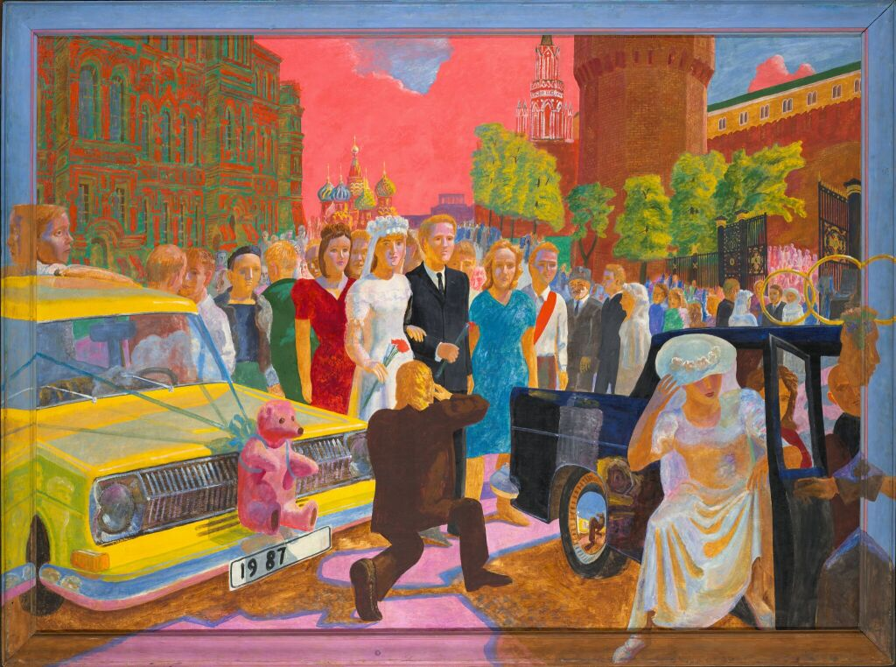
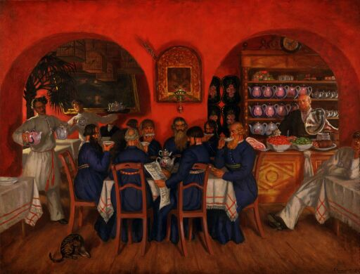
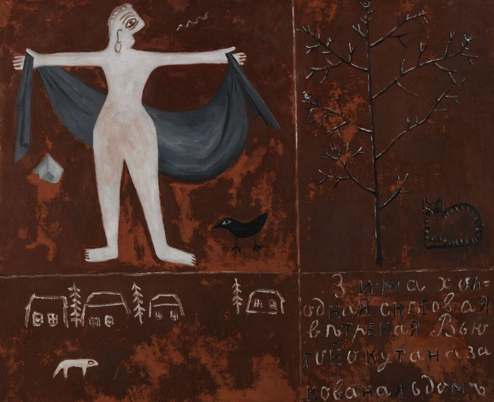
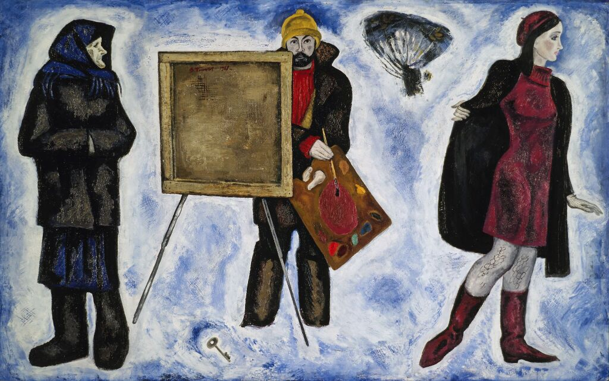
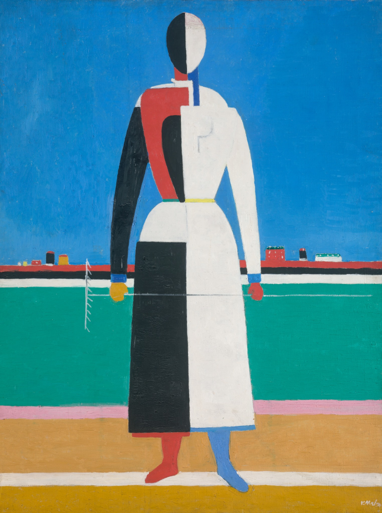

В развитии русской художественной культуры XX столетия чётко выделяются два периода: от начала века до 30-х гг. и 30–80-е гг. Первые два десятилетия XX в. — время расцвета русского искусства, особенно живописи и архитектуры. Поиски новых образов привели к более глубокому изучению национальных корней и традиций. Художники-примитивисты включили в сферу «высокого» искусства сложный и парадоксальный мир городского фольклора, обратились к народной и бытовой культуре. Именно в первые десятилетия XX в. было заново открыто древнерусское наследие, особенно иконопись. Изобразительный язык русских икон во многом повлиял на отношение к цвету, пространству и ритмической организации холста.

Казимир Северинович Малевич — российский и советский художник-авангардист польского происхождения, педагог, теоретик искусства, философ. Основоположник супрематизма — одного из крупнейших направлений абстракционизма.
